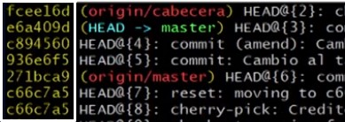
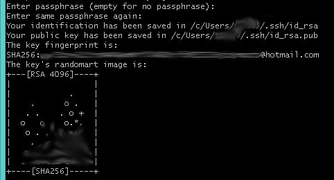
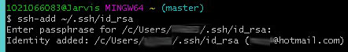
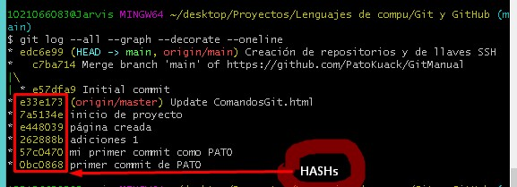
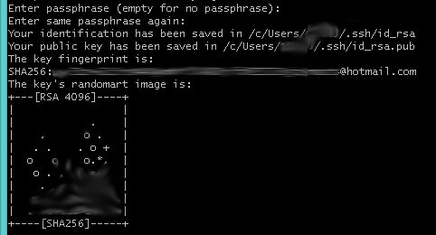
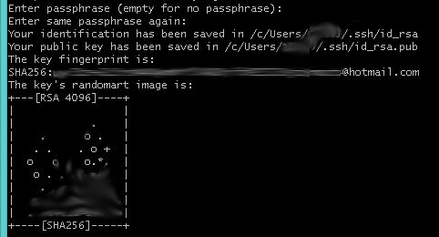

Agrega el archivo o sus cambios al repositorio (en la memoria RAM). se prepara para ingresarse a la base de datos.
git add .
Agrega todos los cambios que se hayan hecho a los archivos de la carpeta en donde se esta pocicionado.
git rm
git rm --cached
Elimina los archivos del área de Staging y del próximo commit pero los mantiene en nuestro disco duro.
git rm --cached __.txt
Elimina el archivo del repositorio antes de que ingrese a la base de datos.
git rm --force
Elimina los archivos de Git y del disco duro. Git siempre guarda todo, por lo que podemos acceder al registro de la existencia de los archivos, de modo que podremos recuperarlos si es necesario (pero debemos usar comandos más avanzados).
git commit
git commit
Envia los ultimos cambios del archivo a la base de datos del sistema de control de versiones para controlar los cambios que se le hayan hecho. *Cada que se agregan (add) archivos se tiene que enviar los cambios a la base de datos (commit). Si no se le agrega mensaje se abre un VIN donde se coloca el mensaje con CTRL+i y se finaliza el VIN con ESC+SHIFT+Z+Z.
git commit -m "mensaje"
La "-m" indica que se le agregará un mensaje para poder verlo en el futuro como una referencia del cambio.
git commit -am "mensaje"
Hace un add junto con el commit y el mensaje, solo se debe utilizar con archivos que ya hayan sido ejecutados con un "git add" previamente, es decir, no funciona para archivos recien creados.
git commit --amend
Incluye un cambio hecho al proyecto al último commit hecho, pero se debe de hacer un "add" antes de usar este commit. También esta instrucción da la opción de modificar el mensaje del commit en el que se guardarán estos últimos cambios.
*No se utiliza con commits que ya esten en el repositorio remoto.
git status
Muestra el estatus de los cambios hechos, se usa para verificar los cambios.
git show
git show
Muestra todos los cambios historicos hechos, cuando y quien hizo los cambios. También muestra a que apunta el HEAD (principalmente solo a 'main')
git show __.txt
Muestra los cambios de un archivo especifico.
git log
git log ___.txt
Muestra el historial completo del archivo.
git log --stat
Muestra los cambios especificos realizados en los archivos apartir del commit.
git log --all
Muestra todo lo hecho historicamente.
git log --all --graph
Muestra por medio de unas lineas en el margen lateral como han funcionado las ramas.
git log --all --graph --decorate --oneline
Muestra toda la historia del proyecto desde que se inicializa.
git log --oneline
Muestra el historial de cambios en una forma reducida.
git reflog
Muestra toda la actividad que ha tenido el proyecto.
git config
git config
Muestra una lista de todas las configuraciones que tiene git y como funcionan.
git config --list
Muestra la configuracion por defecto del git y las que le faltan.
git config --list --show-origin
Muestra las configuraciones guardadas.
git config --global user.name "NAME"
Modifica la configuracion de los usuarios globales de git colocando un nombre.
git config --global user.email "E-MAIL"
Lo mismo pero coloca un e-mal.
git diff
git diff
Muestra los cambios entre los cambios guardados en la memoria RAM y los guardados en el disco duro.
git diff id-commit1 id-commit2
compara dos versiones guardadas de un archivo.
git reset
Con ayuda de "git reflog" se obtiene el hash o id de cada commit o cambio en el proyecto:

git reset --soft
Borramos todo el historial y los registros de Git pero guardamos los cambios que tengamos en Staging, así podemos aplicar las últimas actualizaciones a un nuevo commit.
git reset id-commit --soft
Se posiciona en la version especificada y elimina las versiones posteriores a esa del repositorio.
git reset --hard
Borra todo. Todo todito, absolutamente todo. Toda la información de los commits y del área de staging, se borra el historial.
git reset --hard id-commit
Restaura los documentos a la version especificada del repositorio y elimina las versiones posteriores de git y del disco duro.
*Es una mala practica.
git reset HEAD
Este es el comando para sacar archivos del área de Staging. No para borrarlos ni nada de eso, solo para que los últimos cambios de estos archivos no se envíen al último commit, a menos que cambiemos de opinión y los incluyamos de nuevo en staging con git add, por supuesto.
git clone URL_del_servidor_remoto
Nos permite descargar los archivos de la última versión de la rama principal y todo el historial de cambios en la carpeta .git.
git push
Luego de hacer git add y git commit debemos ejecutar este comando para mandar los cambios al servidor remoto.
*Los archivos binarios no se deben agregar al repositorio debido a que lo hacen más pesado.
git fetch
Lo usamos para traer actualizaciones del servidor remoto y guardarlas en nuestro repositorio local (se ejecuta antes del git push).
git merge nombre_de_la_rama
Usamos este comando con servidores remotos. Lo necesitamos para combinar los últimos cambios del servidor remoto y nuestro directorio de trabajo. Se debe posicionar en la rama a la que se le quieren fusionar los cambios (generalmente se posiciona en la rama principal, o sea main) y en el comando se coloca el nombre de la rama que se le quiere combinar.
git pull
Basicamente, git fetch y git merge al mismo tiempo.
git branch
git branch
Muestra todas las ramas existentes en el proyecto de git.
git branch o git branch -l
Muestra una lista de todas las ramas que existen.
git branch nombre_de_la_rama
Crea una rama del proyecto con el nombre especificado. Esta rama contendrá una copia del último commit.
git branch -d nombre_de_la_rama
Elimina la rama especificada (con '-d' se fuerza el borrado).
git branch -m nombreRamaVieja nombreRamaNueva
Renombra una rama colocando el nombre de la rama actual y el nombre por el que se desea cambiarla.
git show-branch
Muestra las ramas que existen y cuál ha sido su historia dentro del proyecto.
git show-branch --all
Muestra un poco de más información.
gitk
Muestra de una forma visual toda la historia del proyecto.
git checkout
(Se deben guardar los cambios correspondientes en el repositorio actual antes de cambiar de version del commit o de rama).
git checkout id-commit archivo.txt
Nos devuelve el archivo especificado a la version de commit especificada. Si se hace un commit en este estado se borrara todo lo creado despues de esta version.
git checkout main archivo.txt
nos devuelve la ultima version del archivo especificado.
git checkout nombre_de_la_rama
Nos mueve a la rama especificada.
git checkout -b nombre_de_la_rama
Crea una nueva rama con el nombre especificado y nos posiciona en ella.
git remote
git remote
Muestra el tipo de repositorio que tenemos disponibles.
git remote -v
Muestra el tipo de repositorio disponible, su URL y las acciones que se pueden hacer con él como usar fetch (importar proyectos) o push (exportar proyectos).
git remote add origin URL_(HTTPS_o_SSH)
Agrega un orígen remoto de nuestros archivos.
git pull
git pull origin main
Importa a nuestro "origin" los cambios de la rama "main" (repositorio en GitHub).
git pull origin main --allow-unrelated-histories
Permite fusionar la rama (o branch) remota con la rama (o branch) local (generalmente se usa este comando la primera vez que se hace pull).
git pull rama_local main
Importa a una rama local el contenido que hay en la rama "main".
git push origin main
Exporta o envía nuestro "origin" la rama "main" de GitHub.
cd ~
La "~" (alt+126) nos dirige al home
*Se crea una llave SSH por cada computadora.
ssh-keygen -t rsa -b 4096 -C "correo@mail.com"
Se coloca éste código desde home (~).
Lo que hace es que genera una llave de SSH para una mayor seguridad en el proyecto.
Con "-t" se especifica el algoritmo que se utilizará para crear la llave que en este caso es rsa.
Con "-b" se especifica que tan compleja es la llave.
Con "4096" se indica la complejidad de la llave desde una perspectiva matemática.
Con "-C" se indica a que correo electrónico va a estar conectada la llave y el cual debe ser el correo que tenemos en nuestro repositorio de GitHub.
Después de ingresar el código se da enter si es que la dirección de almacenamiento sugerido es deseada o sino se puede escribir una dirección deseada.
Se puede ingresar una contraseña con espacios llamada "passphrase" para mayor seguridad.

*La llave privada nunca se comparte.
Una vez que se tiene la llave se debe agregar al entorno (indicarle al sistema operativo que la llave existe).
eval $(ssh-agent -s)
Verifica que el servidor de llaves esta activo: "Agent" indica que el servidor de SSH esta activo, "pid" es el id del proceso y el número al final indica que el proceso esta activo.
ssh-add ~/.ssh/id_rsa
En home por default se encuentra la carpeta ".ssh" (como empieza por punto se supone que es una carpeta oculta), en donde se encuentran las llaves publicas y privadas.
El comando agregará la llave al sistema, debe contener la ruta de la llave privada.

Después de haber creando nuestro entorno local, nos conectamos con GitHub y se remplaza la conexión HTTPS por una conexión SSH para hacer git pull y git push sin usar contraseñas y seguir manteniendo una conexión segura.
Los tags o etiquetas nos permiten asignar versiones a los commits con cambios más importantes o significativos de nuestro proyecto. Son útiles en el sitio web de GitHub porque es la forma en que otros usuarios pueden visualizar que verciones ocurrieron y rara vez son útiles dentro del proyecto ya que solo se usrían para dejar un registro interno.

Primero se escoje y se copia uno de los hashs que se desea usar para crear el tag.
git tag
git tag
Muestra los tags que existen en el proyecto.
git tag -a nombre_del_tag -m "mensaje descriptivo del tag" hash
"-a" indica que se agregará un tag.
Generalmente se le coloca un nombre como v0.1 (versión 0.1 del proyecto).
git show-ref --tag
Muestra a que hash o a que commit esta conectado un tag.
Como los tags no son archivos no se envian con un simple push.
git pull origin main
Como buena practica, antes de subir a la web un tag, se obtiene el repositorio de GitHub.
git push origin --tags
Le envia a origin los tags creados.
git tag -d nombre_del_tag
Elimina un tag del proyecto en git (no de GitHub).
git push origin :refs/tags/nombre_del_tag
Elimina el tag de GitHub que esta conectado con el tag eliminado dentro del proyecto en git (puede que previamente se tenga que usar pull y push para subir la referencia del tag eliminado en el proyecto de git).
git rebase nombre_de_la_rama
Con rebase puedes recoger todos los cambios confirmados en una rama y ponerlos sobre otra.
Primero se le hace un rebase a la rama a la que se aderirá la rama en la que se esta posicionado, con esto se actualizará automaticamente la rama en la que se esta posicionado con los ultimos cambios hechos a la rama especificada en el comando y después se hace un rebase a la rama que se le aderirá estando posicionado en la rama a la que se le aderirá, ejemplo:
(rama2)$ git rebase rama2
(main)$ git rebase rama2
Primero se le hace rebase a la rama con los cambios que se aderirán y luego a la rama que va a quedar con todo unido.
Los problemas con éste comando son que no queda historia, no queda registro de las actividades de los usuarios y si hay muchos cambios entre ramas crea muchos conflictos que se tienen que resolver manualmente.
*REBASE solo se debe usar en repositorios locales y nunca en remotos.
git stash
Es una forma útil de tener almacenados en una memoria temporal los cambios recientes del proyecto, poder moverlos entre ramas y después volver a recuperarlos.
Podemos usar git stash para guardar cambios sin hacer commit y cambiar de rama.
git stash es usado cuando tenemos cambios que no merecen una rama o no merecen un rebase si no simplemente estamos probando algo y luego se necesita volver rápidamente a tu versión anterior la cual es la correcta.
git stash
Teniendo un cambio en el proyecto se aplica git stash y los cambios se guardarán haciendo que el proyecto vuelva a su forma antes de los cambios sin commit.
git stash list
Muestra una lista de stash guardados.
git stash pop
Aplica el stash guardado al proyecto de la rama en la que se esta posicionado.
git stash branch nombre_de_la_rama
copia el proyecto y aplica los cambios en una rama nueva.
git stash drop
Elimina el stage guardado.
git clean
git clean --dry-run
Simula una eliminación de archivos innecesarios (sin seguimiento que se puede indexar), muestra en pantalla los archivos que se eliminarían.
git clean -f
Elimina los archivos innecesarios mostrados con "dry-run".
git clean -df
Elimina los archivos y carpetas innecesarias.
git clean -xdf
Elimina los archivos y carpetas innecesarias aunque en el documento .gitignore estén indicadoas para ser ignoradas.
git cherry-pick código_del_commit
Posicionado en una rama A, trae los cambios especificos realizados en un commit de la rama B.
*Cherry-pick es una mala practica porque recontruye la historia del proyecto.
git grep
git grep "palabra"
Busca una palabra en todos los documentos de la rama del proyecto en donde se esta posicionado y muestra los documentos en donde se encuentra esa palabra junto con su línea de código.
git grep -n "palabra"
Busca la palabra en todos los documentos de la rama del proyecto en donde se esta posicionado y muestra los documentos en donde se encuentra esa palabra junto con su línea de código y la línea del código en donde se encuentra.
git grep -c "palabra"
Busca la palabra y muestra en que documentos se encuentra junto con las veces que se repite esa palabra en ese documento.
git log -S "palabra"
Busca y muestra los commit en los que esta involucrada la palabra especificada.
Alias dentro de Git.
git shortlog -sn
Muestra cuantos commit han hecho cada miembro del equipo.
git shortlog -sn --all
Muestra cuantos commit han hecho cada miembro del equipo hasta los que han sido eliminado.
git shortlog -sn --all --no-merge
Muestra cuantos commit han hecho cada miembros quitando los eliminados sin los merges.
git blame -c archivo
Muestra quien hizo cada cambio del proyecto línea por línea.
git comando --help
Muestra como funciona el comando especificado abriendo el navegador con el manual de cada comando.
git blame archivo -Llínea_inicial,línea_final -c
Muestra quien hizo cada cosa línea por línea indicándole desde que línea ver, ejemplo: -L35,50
git branch -r
Muestra todas las ramas remotas.
git branch -a
Muestra todas las ramas () locales (e) y remotas (e).
En verde y con asterisco la rama en la que se esta posicionado.
") 
